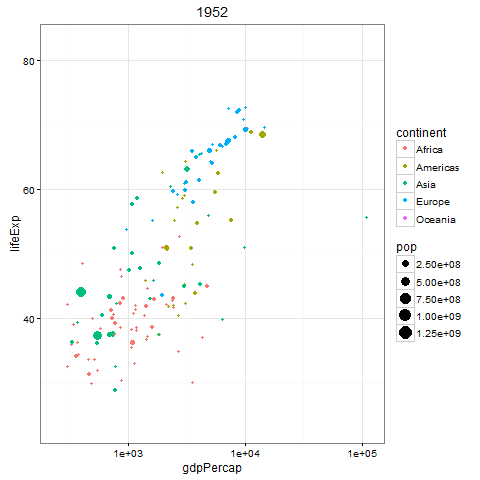
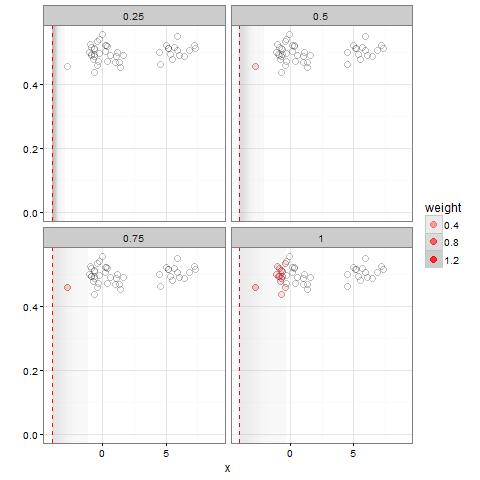

There is now an easy way to create an animated GIF with gganimate package:

library(gapminder)
library(ggplot2)
library(gganimate)
theme_set(theme_bw())
p <- ggplot(gapminder, aes(gdpPercap, lifeExp, size = pop, color = continent, frame = year)) +
geom_point() +
scale_x_log10()
gg_animate(p)
See that all you need to do is to set frame variable. A more sophisticated example from David Robinson.

library(dplyr)
library(ggplot2)
library(broom)
library(gganimate)
theme_set(theme_bw())
set.seed(2016)
min_weight <- .0005
# original data and bandwidths
bws <- c(.25, .5, .75, 1)
x_data <- c(rnorm(30, 0), rnorm(15, 6))
# add some y noise to be visible
dat <- data_frame(x = x_data) %>%
mutate(y = rnorm(n(), .5, .025))
# density fits for each banwidth
fits <- dat %>%
inflate(bw = bws) %>%
do(tidy(density(.$x, bw = .$bw[1], from = -4, to = 9, n = 100)))
centers <- sort(unique(fits$x))
# calculate weights at each x0 center
prep <- dat %>%
inflate(center = centers, bw = bws) %>%
mutate(weight = dnorm(x, center, bw)) %>%
filter(weight > min_weight)
# also raster data for the background
ras <- expand.grid(x = seq(min(centers), max(centers), .05),
y = c(0, 1)) %>%
inflate(center = centers, bw = bws) %>%
mutate(weight = dnorm(x, center, bw)) %>%
filter(weight > min_weight)
# create the plot with layers for the background, the points, the red fills, the
# red vertical line, and the cumulative line plot
p <- ggplot(prep, aes(x, y)) +
geom_raster(aes(alpha = weight, frame = center), data = ras, fill = "gray", hjust = 0, vjust = 0) +
geom_point(shape = 1, size = 3, data = dat, alpha = .25) +
geom_point(aes(alpha = weight, frame = center), color = "red", size = 3) +
geom_vline(aes(xintercept = x, frame = x), data = fits, lty = 2, color = "red") +
geom_line(aes(frame = x, cumulative = TRUE), color = "red", data = fits) +
coord_cartesian(ylim = c(0, max(prep$y))) +
facet_wrap(~bw) +
ylab("")
g <- gg_animate(p, interval = .1, title_frame = FALSE)
g